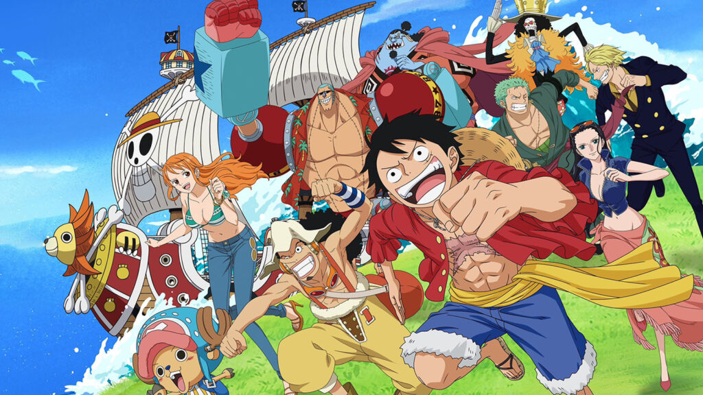

One Piece: Every Straw Hat Pirate's Age, Height, And Birthday
The Straw Hat Pirates are one of the youngest, most ambitious crews in One Piece. This is everything you need to know about them.
THE AUTHOR
Eiichiro Oda (尾田 栄一郎) is a Japanese manga artist and the creator of the series One Piece.
He was born on January 1, 1975 in Kumamoto, Japan. Oda has been drawing manga since he was a child,
and he began working as an assistant to Nobuhiro Watsuki, the creator of Rurouni Kenshin, after graduating from high school.
In 1997, Oda began serializing One Piece in Weekly Shōnen Jump. The series quickly became a success,
and it has since become the best-selling manga of all time, with over 516 million copies in circulation worldwide.
One Piece has also been adapted into an anime series, which is one of the most popular anime series of all time.
Oda is known for his intricate worldbuilding, complex characters, and exciting action sequences.
He is also a generous philanthropist, having donated millions of dollars to earthquake relief efforts in Japan.
Here are some of Oda's awards and accolades:
1992: Tezuka Osamu Cultural Prize Newcomer's Award for Wanted!
1998: Shogakukan Manga Award for One Piece
2001: Kodansha Manga Award for One Piece
2012: Harvey Award for International Spotlight for One Piece
2013: Angoulême International Comics Festival Grand Prix for One Piece
2015: Guinness World Record for the "Most Copies Published for a Single Manga Series" for One Piece
Eiichiro Oda is one of the most successful and influential manga artists in history. His work, One Piece,
has entertained and inspired millions of people around the world
THE STRAWHAT CREW
One Piece's success can predominantly be credited to its lovable characters.
An adventure story lives and dies on the strength of its heroes, and the Straw Hat pirates are iconic for a reason.
People have been watching Luffy, Zoro, Sanji, Nami, Usopp, Chopper, Robin, Franky, Brook, and Jinbe for decades,
to the point that these characters now feel like family. Consequently,
fans might find themselves yearning to know more about these figures. How old are One Piece's characters? How tall is Luffy?
At this point in One Piece, it seems unlikely that the Straw Hats will welcome a new member into the crew, although there is always
a chance that Eiichiro Oda will surprise readers. Still, the current lineup could very well be the final one;
therefore, for easy access, the Straw Hats' personal information has been included in the following table.
NOTE: For the characters' ages and heights, both the pre and post-timeskip information are provided. The first bullet point covers the former while the second point relates to the latter. Also, the height's feet and inches data have been rounded up.
| WANTED: DEAD OR ALIVE | BIRTHDAY | AGE | HEIGHT |
|---|---|---|---|
| MONKEY D. LUFFY | May 5 | 17 19 |
5'8" / 172 cm 5'9" / 174 cm |
| RORONOA ZORO | November 11 | 19 21 |
5'10" / 178 cm 5'11" / 181 cm |
| VINSMOKE SANJI | March 2 | 19 21 |
5'10" / 178 cm 5'11" / 181 cm |
| TONY TONY CHOPPER | December 24 | 15 17 |
2'11" / 90 cm |
| FRANKY | March 9 | 34 36 |
7'5" / 225 cm 7'10" / 239 cm |
| NICO ROBIN | Febuary 6 | 28 30 |
6'2" / 188 cm |
| JINBEI | April 2 | 44 46 |
9'11" / 301 cm |
| USSOP | April 1 | 17 19 |
5'9" / 174 cm |
| BROOK | April 3 | 88 90 |
8'9" / 266 cm 9'1" / 277 cm |